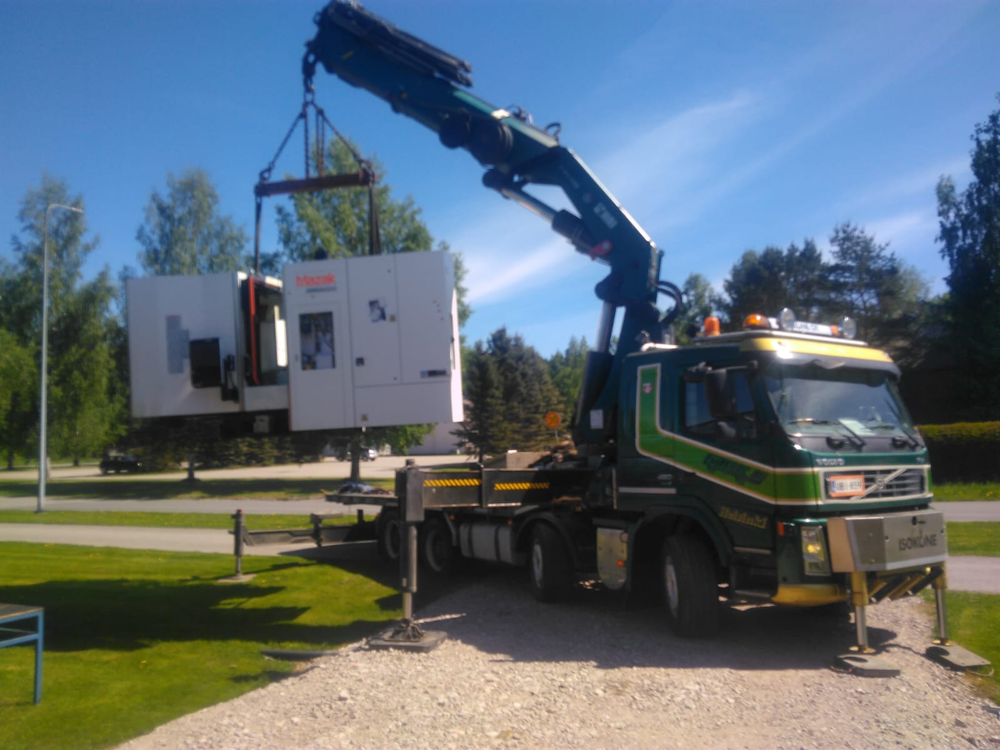
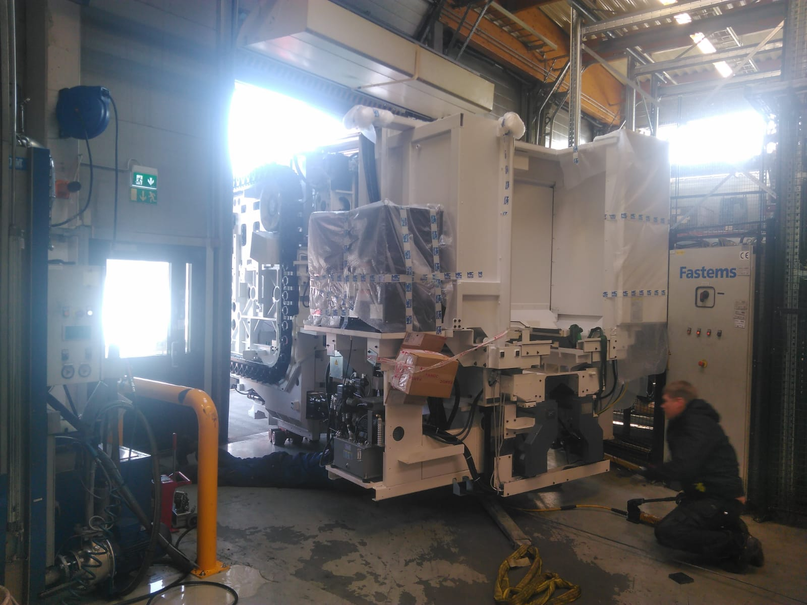
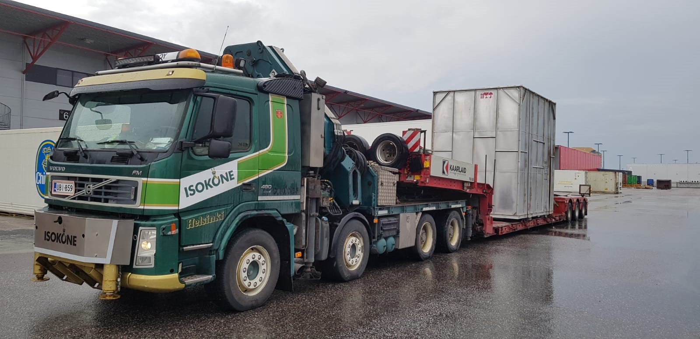
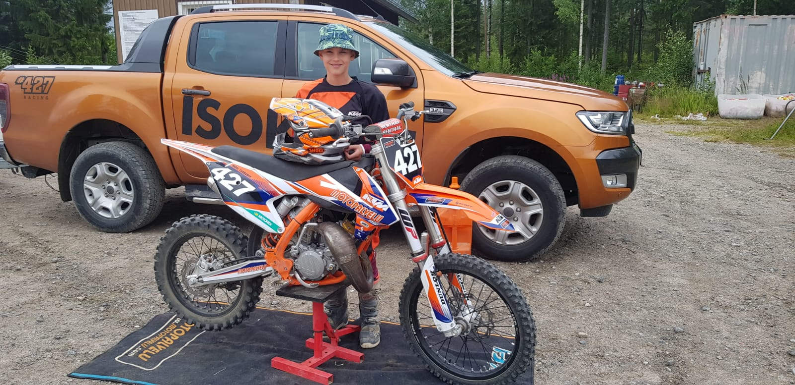

RASKAS
KALUSTO.



Isot koneet. Oikeaan paikkaan.
KONE SIIRTYY.
HOMMA ETENEE.
Kun teollisuuden kone vaihtaa paikkaa, tarvitaan muutakin kuin hevosvoimia.
Isokone suorittaa koneiden kuljetukset, nostot ja haalaukset. Työn taustalla on pitkä kokemus ja suora yhteys tekijään.
ESAKONE OY:STÄ IRTAUTUNEENA.
01KULJETUKSET
Teollisuuden koneiden kuljetukset. Korkeat erikoiskuljetukset kehtokärryllä.
Kerro koneen mitat, lähtöpaikka ja määränpää. Aloitetaan siitä.
Kysy kuljetuksesta ↗
02NOSTOT
Teollisuuden koneiden nostot osana siirtotyötä. Kalusto ja kokemus työn äärellä.
Kerro nostettavasta koneesta ja kohteesta. Käydään vaatimukset läpi.
Kysy nostotyöstä ↗03HAALAUKSET
Koneiden haalaukset. Raskaan koneen siirtämisessä viimeiset metrit ovat osa työtä.
Kerro tilasta ja koneen tulevasta paikasta. Suunnitellaan siirto yhdessä.
Kysy haalauksesta ↗TERÄSTÄ.
TEKOJA.
Oikea kalusto. Oikeita työkuvia.
Isokoneen omasta kuvagalleriasta.

VOIMAA
MYÖS RADALLE.
Isokone Oy mukana tukemassa nuoria urheilijoita — 427 Racing Team.
Tutustu alkuperäiseen juttuun ↗Kaikki uutiset ja arkisto ↗PAINAVA ASIA?
OTA YHTEYTTÄ.
Suora yhteys tekijään.
Soita tai kerro työstäsi sähköpostilla.
Isokone Oy
Hilabäckintie 72
02480 Kirkkonummi
Isokone Oy
Y-tunnus: 2904132-4
Verkkolaskutiedot
Verkkolaskuosoite / OVT-tunnus
003729041324
Operaattori
Apix Messaging Oy (003723327487)
Jos lähettäjän operaattori on Danske Bank Oyj, Handelsbanken, Paikallisosuuspankit tai Säästöpankit, käytä verkkolaskuosoitetta 003723327487 ja operaattoritunnusta DABAFIHH.